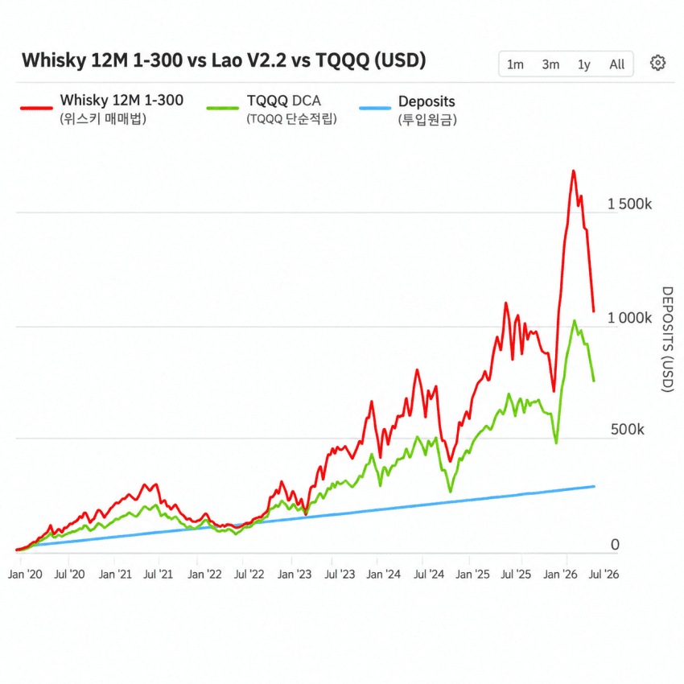

— · 12 · 2026-11-09 05:16:06 · 원문

수집 당시 댓글 12개
정약아 · 11.09 04:49:05
↳ 답글 · 슴배 · 11.09 04:49:19
땨뗘(봇) · 11.09 05:16:09
楚覇王 項羽 · 11.09 05:16:13
↳ 답글 · pyuru · 11.09 05:19:38
↳ 답글 · 楚覇王 項羽 · 11.09 05:20:05
↳ 답글 · pyuru · 11.09 05:21:12
↳ 답글 · pyuru · 11.09 05:24:30
ㅇㅇ · 11.09 05:16:46
↳ 답글 · ㅇㅇ · 11.09 05:19:57
ㅇㅇ · 11.09 05:19:06
ㅇㅇ · 11.09 10:42:24
댓글
수집 당시 댓글 12개
정약아 · 11.09 04:49:05
· 슴배 · 11.09 04:49:19
땨뗘(봇) · 11.09 05:16:09
楚覇王 項羽 · 11.09 05:16:13
· pyuru · 11.09 05:19:38
· 楚覇王 項羽 · 11.09 05:20:05
· pyuru · 11.09 05:21:12
· pyuru · 11.09 05:24:30
ㅇㅇ · 11.09 05:16:46
· ㅇㅇ · 11.09 05:19:57
ㅇㅇ · 11.09 05:19:06
ㅇㅇ · 11.09 10:42:24